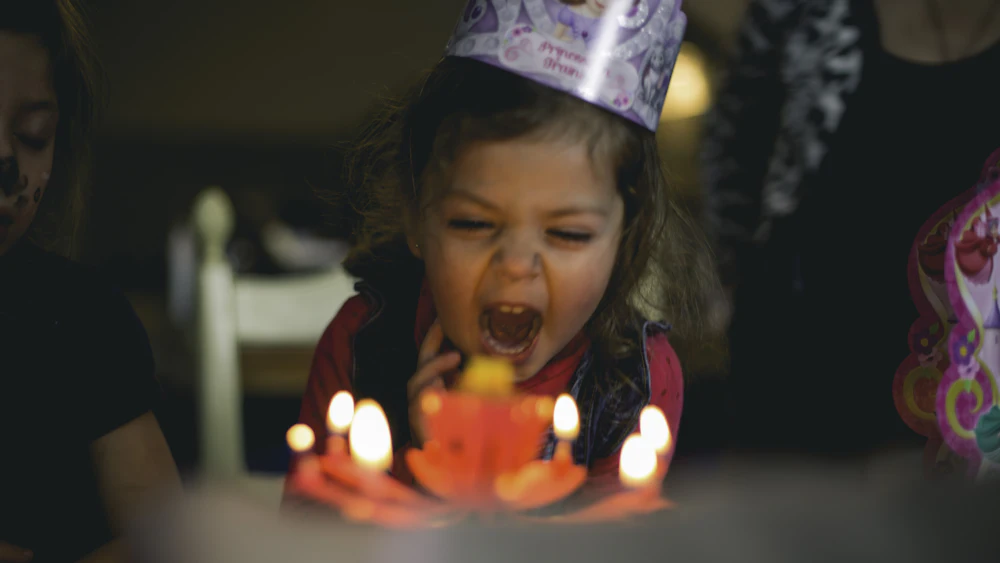
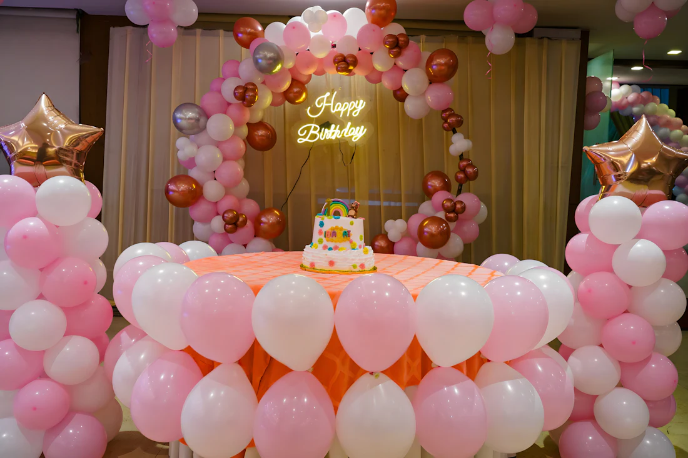
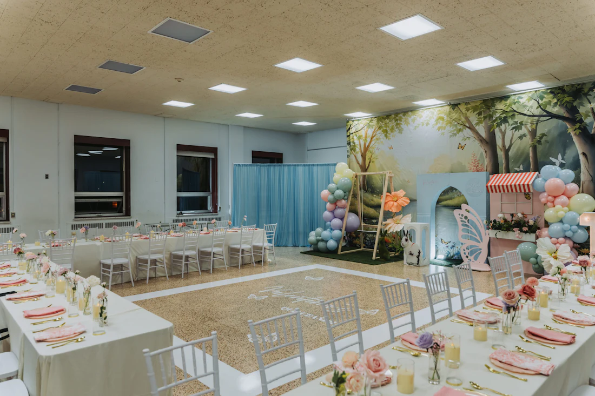
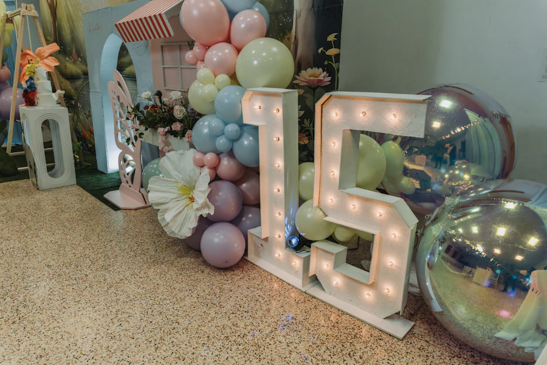
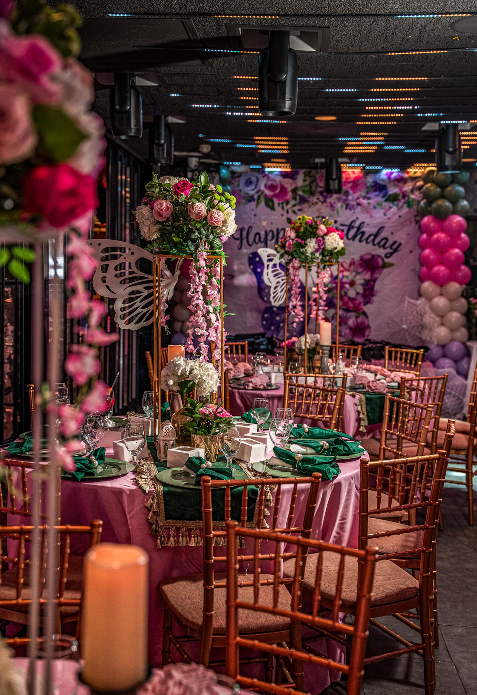

Escolha o dia. A festa é por nossa conta.
De quantos anos é a festa?

Brinquedo, bagunça e bolo na altura deles.
O espaço




Quantos vêm soprar junto?
Sopro
- Buffet completo
- Bolo e doces
- Decoração temática
- Bebidas
- DJ
- 5 horas de festa
- Estacionamento
Pacotes de exemplo, criados para esta demonstração.
Quem já comemorou aqui
Minha filha pediu para voltar no dia seguinte.
Cheguei só na hora de soprar a vela. O resto já estava pronto.
Meus 40 acabaram às 2h e ninguém queria ir embora.
Depoimentos de exemplo, criados para esta demonstração.
Posso levar meu bolo?
Pode. Ou escolha um dos nossos.
Com quanto tempo devo reservar?
Sábados saem primeiro. Chame assim que souber a data.
A decoração pode ter tema?
Pode. Você escolhe o tema e a gente monta.
Tem estacionamento?
Tem, em todos os pacotes.
E aí, qual é o dia?
Vila Mariana, São Paulo. Endereço de exemplo.